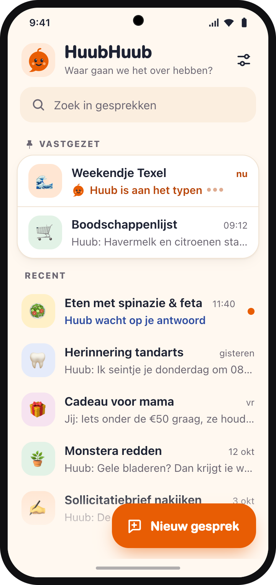
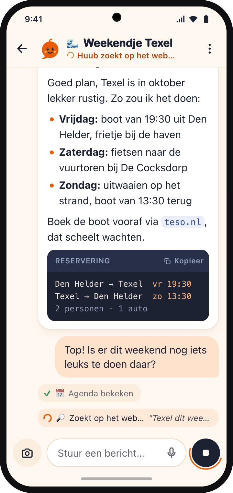
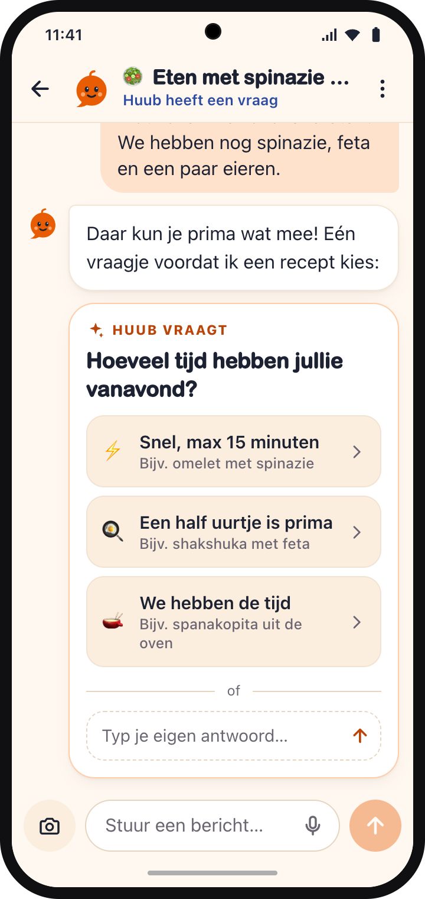
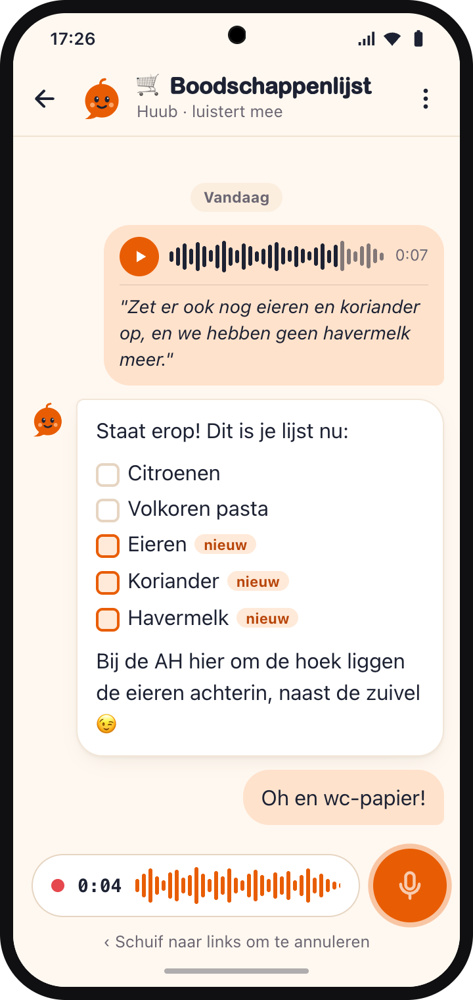
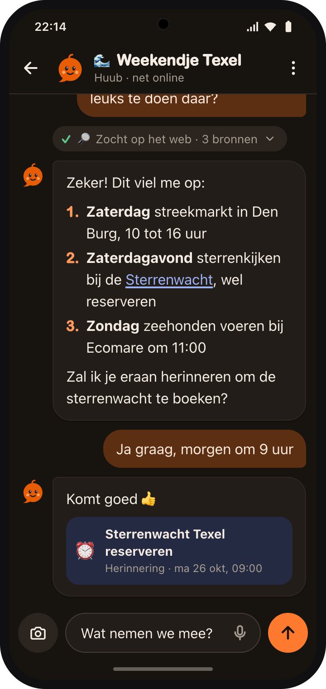
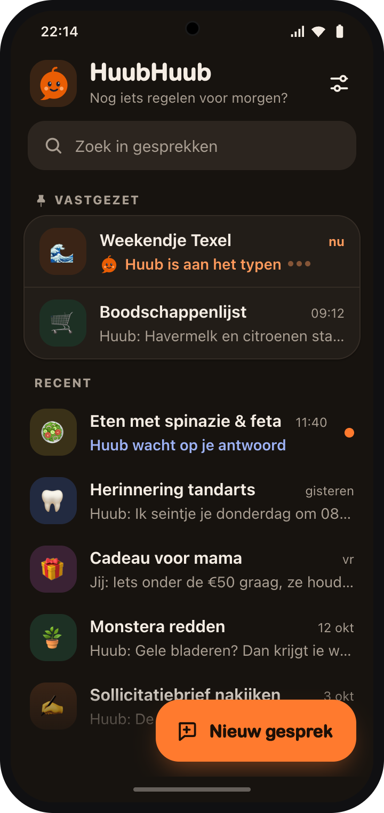
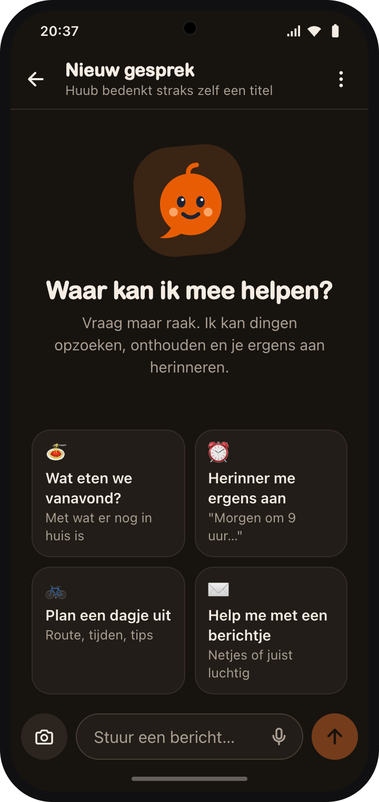
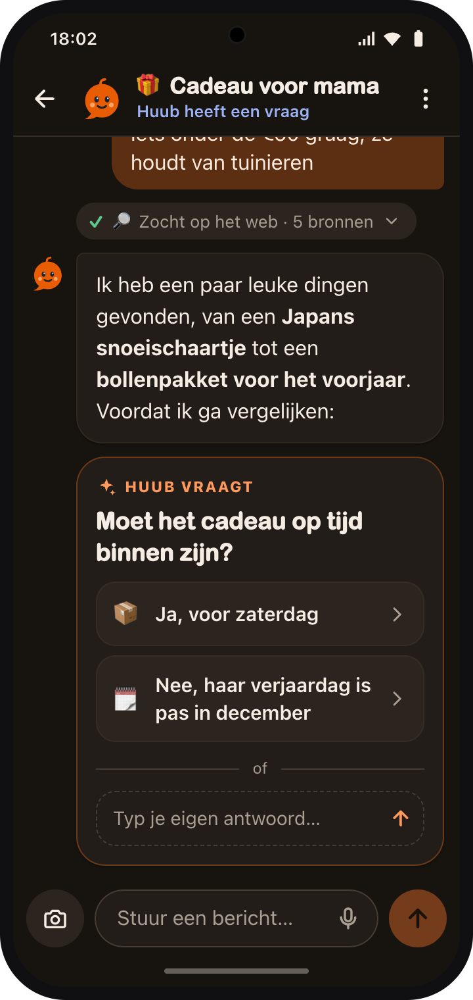
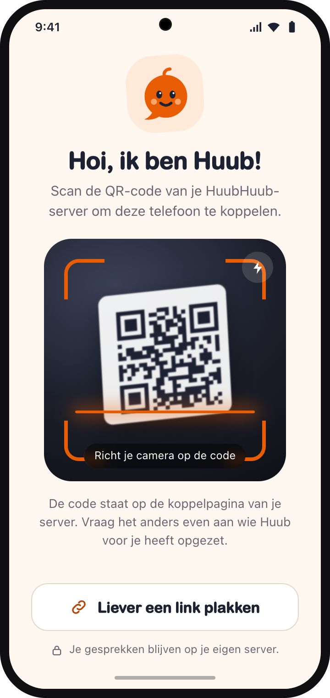

HuubHuub puts a real coding agent in the chat app you already use. Every conversation gets its own thread. Huub remembers who you are, runs things on a schedule, works in your GitHub repos and sticks to a budget. It all runs on your own server.
Promise.all, so they often share a createdAt. I added id as a tie-breaker and ran it 50×: 50 pass, 0 fail.
Coding agents can run commands, edit files, open pull requests and call tools. But they sit in a terminal on someone's laptop, start from zero every time, and nobody watches the bill. HuubHuub runs one on a server and lets your whole household or team talk to it from their phone.
Each chat opens its own Telegram topic with its own session. /new starts fresh.
Replies stream in as a draft with a stop button, with short status lines while tools run.
When Huub needs a decision, you get tappable options. Or just type or say your answer.
Voice is transcribed with Amazon Transcribe. Images and text files go straight to the model.
Cron, intervals or one-off. Prompts, shell commands, or a cheap pre-check before the model runs.
Who the bot is, per person. Memory is off, saved when asked, or saved automatically.
See spend by model, source and person. Set daily and monthly caps. Check it with /costs.
One GitHub App gives the agent gh and git on the repos you pick. No tokens to paste.
Pull SKILL.md skills from private repos. They sync on their own and reload live.
Paste an API key, a whole .env, or sign in with OAuth. Paste Claude Desktop or Cursor MCP configs.
An Android app for people who'd rather not use Telegram, with push notifications. It syncs with Telegram.
Read and reply to every conversation live, with each tool call, token and cent, from a web admin UI.
Talk to Huub in Telegram or the phone app, and run the place from the admin UI. Conversations, personas, memory and limits are shared across all three.
A message outside a topic starts a new one, renamed as soon as OpenCode titles the session. In groups, every forum topic is its own session.
In private chats the reply streams in as a live draft with a stop button. Status lines show what's happening: "⚙️ Running tests…", "🌐 Reading github.com…".
Agent questions arrive with a button per option, ticks for multi-select, and a timeout so a run never hangs forever.
In automatic mode Huub posts "🧠 Remembered: …" with a Forget button. /memory lists everything and /forget 12 removes one.
/new, /stop, /model, /agent, /schedule, /skills, /persona, /costs and more.








Scroll sideways for more. The sample content is in Dutch, because that's what Huub speaks at home. Personas set the language and tone per person.
Conversations. Every thread, live: streamed replies, tool calls, reasoning and the tokens and cost of each turn. Reply, stop, or switch model from here, and it's mirrored to Telegram.
HuubHuub is a small Bun service that runs an OpenCode server next to it. OpenCode does the agent work: models, tools, MCP and the workspace. HuubHuub turns that into conversations people can have.
Bun · grammY · SQLite in /data
/workspace as its working directoryCreate a bot with @BotFather, copy its token, and turn on Threaded Mode in its settings.
$ cp .env.example .env # TELEGRAM_BOT_TOKEN=123456:ABC…
One Docker Compose command. Sessions and settings live in a volume and survive restarts.
$ docker compose up -d --build $ docker compose logs -f
Open the admin UI on port 8080, paste an API key (or a whole .env), and say hi to Huub.
# the admin token is printed # in the startup log → http://localhost:8080
Read the setup guide, or dig into how every part works.